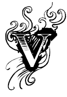

“Bản thảo cuốn sách này đã được soạn và đánh máy trong một tình thế lén lút và bị cô lập. Vì vậy tôi khiêm tốn gửi lời xin lỗi về những lỗi lầm hay sai trật đến những ai quan tâm đến những suy tư và những bài viết của tôi, và mong muốn cuốn sách này sẽ được phát hành ở Pháp”
Luật sư Nguyễn Mạnh Tường
13 Tháng 5 năm 1991
Luật sư Nguyễn Mạnh Tường

ài tháng sau trận Điện Biên Phủ, tôi được lệnh tập trung lên trình diện tại Chiến Khu Việt Bắc. Tôi nghĩ đây cũng là lần tập trung để học chính trị như những lần trước. Cấp lãnh đạo luôn rất quan tâm đến việc giáo dục quần chúng và truyền giảng cho giới trí thức những ý niệm về chủ nghĩa Maxist-Leninist mà họ tự cho rằng chỉ họ mới là những người duy nhất hiểu biết nó. Bằng con bài chủ của mình, những hiểu biết dó, họ cho rằng có thể áp đặt được sự nể trọng họ lên giới trí thức, và cùng lúc, họ có thể thanh toán được nỗi mặc cảm tự ty của mình. Đúng là ngây thơ, nhưng tất cả các ngài đều mang bệnh ngây thơ ấy. Vì thế, tôi đành phải tự chèo chống lấy mình cho qua những giờ dài đăng đẳng để khỏi nghe vài diễn giả cà lăm lải nhải. Họ không thể nào ngăn được tôi trốn trong một góc khuất, ngáp dài nếu không ngủ hay mơ về bất cứ điều nào mà tôi thích. Nhưng cái chiến thắng vang dội vừa mới đây lại mang đến cho tôi những xì xầm to nhỏ. Sự tiên liệu của tôi đã thành sự thật khi thấy cả ngàn cán bộ thuộc đủ các ngành đang tập trung ở Tân Trào. Sau rốt, chúng tôi biết chúng tôi sắp được học “chính trị” – đây là một cụm từ linh thiêng, ở Việt Nam, mọi chuyện đều là “chính trị”- để tổ chức buổi lễ Chính Phủ Kháng Chiến tiến vào tiếp thu Hà Nội. Quân đội Thực Dân phải ra đi và bàn giao lại tất cả các cơ quan công quyền bao gồm cả nhà cửa, thiết bị dụng cụ và cả những người Việt đang làm việc nơi đây.
Buổi học tập là để biết phải có thái độ gì đối với những công nhân viên đã được chỉ định để bàn giao cơ quan mà trước đây họ làm việc trong thời kỳ Pháp thuộc. Những mật báo viên của chúng tôi đã lập những hồ sơ những người chủ chốt của cơ quan, hồ sơ lý lịch, gia cảnh, thái độ đối với Kháng Chiến, cảm tình đối với xếp trên người Pháp của họ và nước Pháp, cũng như khát vọng và khả năng của họ. Những thông tin đó rất quý giá và nó giúp chúng tôi đánh giá mức độ tin cậy đối với từng người, sự hỗ trợ của mỗi người có thể có cho chúng tôi và những kỳ vọng mà chúng tôi có thể chờ đợi từ mỗi người của họ. Như vậy chúng tôi không phải quá mạo hiểm đi vào một vùng xa lạ, có thể vấp khựng trước những chướng ngại vật hay trượt ngã vào những cạm bẫy bất ngờ.
Câu hỏi nhạy cảm là làm sao tìm ra một thái độ cư xử với những người mà tình cảm được che giấu sau bức màn của lễ độ và của nụ cười? Người của Kháng Chiến phải tự mình hết sức cẩn trọng trong lời nói, cách nhìn, cử chỉ để tránh ám chỉ dù nhẹ nhàng nhất đến sự khinh thường hay chiếu cố riêng đối với từng nhân viên dưới quyền.
Nếu các cấp lãnh đạo cấp cao thấm nhuần và luyện tập bản thân về ý này, thì rủi thay, đám tôi tớ tuỳ tùng không hề bỏ lỡ một cơ hội nào để phô trương sự ngạo mạn một cách lố bịch và đầy tai hại. Chúng nó tự ca tụng và phô trương là đã chịu nhiều gian khổ và bệnh tật trong những năm bí mật kháng chiến, nay chúng đòi phải được trả công bởi những kẻ không “may mắn” được tham gia Kháng Chiến. Tai hại gây nên bởi loại người thiếu thận trọng đó thật lớn lao. Hố ngăn cách hai nhóm người trong xã hội càng đào sâu hơn nữa. Trong số những người bất mãn, có những người bỏ ra nước ngoài mang theo tài sản của Đất Nước và lòng yêu nước, mang những của cải làm quà cho những Đất Nước nhận dung dưỡng và cho họ những cơ hội thích hợp với khát vọng và ước mơ của họ. Những người khác thì đã nức hận thù chống cộng, luôn tìm cơ hội để phát tiết nỗi oán giận, thành lập những tổ chức bí mật, thiết lập quan hệ với kẻ thù của chúng ta ở nước ngoài, nhận tiền và chỉ đạo và ngay cả những trợ giúp quân sự với mục đích gây rối loạn, gây biến động nổi dậy, và nếu được là một cuộc đảo chính. Đại bộ phận dân chúng thì trì trệ trong sự dửng dưng, chọn thái độ chờ xem, chẳng màng suy nghĩ hay kêu gọi những mong đợi của họ về chuyện thay đổi chế độ; họ giữ im lặng, quan sát, nghe ngóng và không làm một hành động hay đưa ra một thái độ nhiệt tình nào trong công việc giao cho họ. Bất cứ công việc nào mà con tim không có, thiếu niềm vui, vắng nhiệt tình, thì nó không thể cho ra kết quả hữu hiệu, ít nhất cũng là việc chính quyền kháng chiến, mặc dù những tuyên ngôn, mà hoá ra như những lời khoác lác làm trò cười cho thiên hạ, đã không cung cấp nổi cho công nhân viên những nhu cầu tối thiểu của đời sống hàng ngày. Những công chức được trả lương hậu hĩnh dưới thời chính quyền Thực Dân trước đây được tiếp tục hưởng lương như thế trong một thời gian. Nhưng một vài “tâm hồn cao quí” trong bọn họ, được sự “chỉ đạo” đúng đắn và bài bản của “lãnh đạo”, không biết dưới sự đe doạ hay được lời hứa thưởng công, đã đưa ra kiến nghị cùng bình đẳng lương bổng, nhưng không phải bình đẳng theo hướng nâng lương lên cao mà cùng giảm lương về mức thấp. Để thuyết phục các đồng nghiệp chấp nhận ăn miếng bánh thanh bạch, những tác giả của kiến nghị “công bằng lương bổng” kéo nhau rỉ tai là “Trong những năm kháng chiến, chúng mình chưa bao giờ bị đói, lạnh, nguy hiểm đến tính mạng; chúng mình sống no đủ hạnh phúc thoải mái với gia đình. Như vậy, chuyện từ bỏ những đặc quyền và giảm bớt lợi tức của chúng ta cho bằng các bạn đồng nghiệp phía kháng chiến có phải là một việc làm có tình có lý hay không? Như vậy chúng ta đã có một hành động công bằng; chúng ta cho thấy khả năng chấp nhận hy sinh và sẽ không bao giờ thành đối tượng bị khinh miệt bởi người khác; chúng ta mang lại sự đoàn kết trong cộng đồng công nhân viên nhà nước, và bình đẳng giữa người này người khác. Chúng ta cùng cực khổ cáng đáng việc xây dựng lại Đất Nước nhé!”. Nhiều người đã rùng mình ớn lạnh khi nghe những lời rủ rỉ phát sinh từ cấp cao nào đó truyền xuống mà thấy miệng đắng như vừa nuốt nguyên túi mật không tên. Đó là mùi vị của khốn cùng mà tất cả công nhân viên nhà nước đang cúi mình gánh chịu.
Về phía dân chúng, đối với chúng tôi họ dành trong lòng một sự tò mò nhưng thân thiện. Họ và chúng tôi cùng dòng máu đang chảy trong huyết quản, cùng một quá khứ đầy tự hào và tủi nhục. Điện Biên Phủ đã tràn ngập con tim của mọi người với cùng độ nức lòng và cùng tầng nhiệt huyết. Nhưng, dù thế nào, kháng chiến vẫn là một thế giới riêng, người đi kháng chiến cũng là những con người thường nhưng với những tập quán thói quen có thể làm ngạc nhiên thế giới văn minh. Người ta có thể nhìn chúng tôi như những kẻ man rợ vì không biết dùng lược và nước hoa để chải đầu hay xài xà phòng tắm để săn sóc làn da; man rợ vì không biết cầm dao nĩa thế nào cho đúng cách; nhưng cũng có người vừa to mắt ngạc nhiên vừa trao tặng chúng tôi một bó hoa; có người chờ xem hành động và lời nói của chúng tôi để xem có thể dành cho chúng tôi mối cảm tình nào đó hay chỉ thuần là một nỗi nể nang sợ hãi, nếu chưa muốn nói đến một sự lãnh đạm xa cách.
Khó khăn lớn nhất của chúng tôi là việc tiếp cận giới trí thức Hà Nội, nhất là khi họ đã được cảnh báo về chủ nghĩa Cộng Sản. Việc họ bỏ nước ra đi sẽ gây thiệt hại đáng kể cho Đất Nước bị mất đi những chất xám mà sau đó chính những nước ngoài là người hưởng dụng. Đó là lãnh vực mà ta cần phải tránh những sai lầm ngớ ngẩn do những người được giáo dục đúc khuôn từ Đảng là thủ phạm, bởi vì họ đầy tự mãn, đầy kiêu căng, bởi vì họ không có trình độ về lãnh vực trí thức và xã hội.
Nhưng, theo đánh giá của cấp Lãnh Đạo, điều tệ hại nhất là điều đe doạ đến tính trong sáng của cán bộ kháng chiến đã hơn mười năm nay được Đảng giáo dục. Khi đến với kháng chiến, toàn bộ hay ít nhất là gần như toàn bộ cán bộ là đã có những vết nhơ của tư sản, của thế giới phản động. Những vết nhơ đã làm hoen ố tâm hồn nhiều hơn là thể xác, làm biến chất con người, làm sai lạc quan điểm và làm méo mó tư duy của họ. Phải cần nhiều năm miệt mài học chủ nghĩa Lenin, hàng năm theo những lớp học chính trị, những buổi phê bình và tự phê bình, những ngày lao động chân tay, trải nghiệm gian khổ để chữa sạch những vết thương mưng mủ, để chữa trị khỏi những tật bệnh nếu không phải là để cho một sự trinh nguyên cho thể xác, thì cũng để đạt đến sự chân thành biến thành những kẻ dễ bảo cho lãnh đạo.
Ngày nay họ lại phải trở về với chính nơi độc nhiễm mà họ trước đây sinh sống, Đảng đã bắt chước Trung Quốc tìm cách cho họ tránh những “viên đạn bọc đường” bằng cách trang bị cho họ những bao ngừa thai để tránh những mầm SIDA chính trị, một bệnh truyền nhiễm chết người, y chang như trang bị cho người để chống SIDA ở đời thường. Cái gì đã quyến rũ các ông quan kháng chiến một khi họ trở về Thủ Đô? Một bữa ăn thịnh soạn có champagne, rượu Tây, thuốc lá Anh, những điệu valse ẻo lả, những ánh mắt đưa tình và những nụ cười mời mọc của những nàng tiên kiều diễm là quá đủ để kéo tên “man rợ” ra khỏi rừng rú ném hắn vào đám yêu tinh và làm hắn phải “bán linh hồn cho quỉ dữ”… Nhưng làm sao sự khôn ngoan và những tiên liệu của Đảng lại có thể ngăn được những đợt thuỷ triều của ham muốn đã nhiều năm bị đè nén và đang đến lúc nổ tung? Trong những năm 1989-1990, cả nước bàng hoàng thất vọng và kinh hoàng trước tội ác của những đảng viên biến chất, nhiều quan chức cao cấp của Đảng và của Nhà Nước đã hành xử như những băng đảng trộm cướp, đã nuốt nhiều tỉ đồng của công quỹ để thoả mãn ham muốn đê tiện của mình. Chưa bao giờ, dù dưới bất cứ chế độ nào, một vụ tai tiếng như thế lại có thể xảy ra, và Đảng phải đỏ mặt vì xấu hổ và đen như nhuộm bùn. Viên đạn bọc đường quả thật đã chơi trội việc giáo dục chính trị.
Ngày 10 tháng 10 năm 1954 đúng 10 giờ sáng, lực lượng Kháng Chiến trọng thể tiến vào Thủ Đô. Dẫn đầu là đoàn quân với những lá cờ tung bay với tiếng trống liên hồi. Những cán bộ đứng trên những chiếc xe tải vẫy tay chào đồng bào đứng đầy hai bên đường đang hô to những tiếng vui mừng, phất phất những lá cờ nhỏ. Tất cả hai bên nhà phố đều trang trí và niềm vui không tả trên ánh mắt của từng người dân. Từng chặp, đoàn quân phải ngừng lại để nhận những vòng hoa của từng đoàn thiếu nữ mang tặng. Sự nồng nhiệt của dân chúng đã lên đến cao độ, thật chân thành và nồng hậu. Kể cả những người mà con tim còn đang nhịp nhẹ những tiếc nuối với người chủ hôm qua, tất cả đều chuẩn bị đầy đủ cho một cuộc găp gỡ dễ thương bằng sự rộng rãi và lịch sự, họ vỗ tay hoan hô những người đã làm nên chiến thắng Điện Biên Phủ: chiến công của họ khơi động lại niềm hãnh diện của người dân Việt và phục hồi lại danh tiếng cho nước nhà.
Trong hai tuần đầu, tất cả cán bộ đều được lệnh không ra khỏi nơi đang cư ngụ. Chúng tôi không biết được lý do tại sao. Có phải đây là vì vấn đề an ninh? Không kể những viên đạn bọc đường mà mọi người cho rằng có thể phá vỡ sự trong sáng của những con người kháng chiến sau nhiều năm được cải tạo, thì có phải chăng vì sợ súng đạn của những kẻ quá khích hay gián điệp có thể mang đến những cái chết vô nghĩa cho những người mà Đảng đã mất hàng chục năm để đào tạo và đã biến họ thành những người Cộng Sản trung kiên? Hay đã có những ý nghĩ kỳ quặc đang manh nha trong đầu của vài lãnh đạo đang nắm quyền và họ chỉ muốn thuộc quyền tuân phục một cách mù quáng? Mặc kệ lý do gì! Có chuyện lo bảo vệ an toàn hay chỉ là một nhắc nhở là chúng tôi chỉ là những con chốt tầm thường trong tay của những người lãnh đạo, chúng tôi đều cúi đầu phục tùng cho bạo chúa phán lệnh lúc nào phải hành động y những con rô bốt mà chẳng biết bận tâm suy nghĩ tại sao. Trong khi chúng tôi có thể về thăm nhà ở Hà Nội để có chỗ nơi ăn ở đàng hoàng, giường êm nệm ấm thì chúng tôi phải nằm trên sàn trần, cuốn mình trong những tấm chiếu không khác gì những tử tù đang chớ ngày đút đầu vào máy chém… Chúng tôi tiếp tục sống đời kham khổ kỷ luật như những người Spartan như những năm bí mật kháng chiến; khi bữa ăn kết thúc, chúng tôi lại xếp hàng rửa bát bên vòi nước. Thật ra đâu cần thiết phải đối xử bất nhân kéo dài thêm hai tuần xa cách cho những người đi kháng chiến đã hơn mười năm chưa gặp lại gia đình? Chỉ còn thêm vài trăm bước đường nữa là mọi người trở về đã có thể ôm lại cha mẹ anh em và trao cho nhau những giọt nước mắt mừng tủi sau những năm xa cách mà tưởng như thiên thu. Có phải chăng người Cộng Sản là những anh hùng mà mắt đã không còn lệ, mà trong tim tình cảm gia đình đã biến mất, linh hồn đã bị huỷ diệt bởi một niềm tin điên cuồng vào một học thuyết chủ nghĩa hay một tôn giáo?
Về phần mình, một mặt lòng tôi rộn rã vui sướng được đặt chân trở lại thành phố nơi tôi sinh ra, nơi mà những kỷ niệm đầy nhớ mong đã bám chặt lấy tôi suốt những năm xa cách; một mặt khác, lòng tôi lại héo buồn vì không được quay về nhà trong giờ phút đầu tiên để gặp lại cha mẹ già đang khắc khoải chờ mong gặp lại đứa con trai lớn đang ra vào hiểm nguy mà không cần tranh cãi chi đến đến chuyện nó ra đi là có cần thiết hay chính đáng không.
Điều không vui của tôi kết thúc khi tôi được phân công về nhận trường Luật. Ngay sau khi buổi lễ bàn giao chấm dứt là tôi chạy bay về nhà gặp lại mẹ cha chảy những giòng nước mắt khi thấy con mình còn sống trở về.
Ngày kế, tôi tập họp toàn thể nhân viên trong phòng giám đốc, một căn phòng lớn mênh mông ở phía phải đầu trên cái thang lầu to tướng, đối diện với cái giảng đường to mà hơn mười năm trước tôi vẫn hay đứng giảng bài cho sinh viên hay thuyết trình trong những buổi hội nghị cho mọi người.
Tất cả ban giảng huấn đều biến mất ngoại trừ ông Đào Bá Cường, tất cả đã chọn con đường ra nước ngoài hay quay ra hành nghề luật sư. Tôi chỉ còn lại ba cô thư ký và một lái xe hãnh diện là đã giấu và giữ lại được một chiếc xe thoát khỏi tay cảnh sát của Thực Dân. Trong khi chờ đợi quyết định tổ chức lại hay giải tán trường Luật, chúng tôi chẳng có nhiều việc để làm, nhất là sau khi đã xếp lại thứ tự cho Thư Viện, xếp vào kệ bộ sách Luật Dalloz-Sirey toàn tập mà khối lượng sách đã từng nhiều lần làm tròn xoe mắt của dân không chuyên ngành. [1]
Tôi đã phải mất công kéo giờ có mặt của các cô thư ký xuống hai giờ mỗi ngày, bởi “tập thể” – tên mới mà những người cộng sản dùng – không thể ngồi đó lâu hơn vì chả lẽ cứ ngồi đó mà ngáp và không làm gì cả cho hết ngày? Vì vậy, để tránh khỏi sinh ra ức chế vì cả ngày không việc gì làm, những ngưởi cộng tác với tôi yêu cầu tôi khai tâm cho họ về chủ nghĩa Maxist. Không có gì làm họ khó chịu bằng phải nghe những điều đần độn về chủ nghĩa Maxist vả những cái ngạo mạn chỉ đáng cho cái tát vào mặt. Tôi bảo đảm cho những người nghe là nhiều kẻ nói về Marx nhưng chưa lần nào đọc về Marx, hoặc nếu có cơ may đọc được vài đoạn trong cuốn Tư Bản Luận thì họ cũng chả hiểu chi. Chứng cớ là những người Marxist dày dạn đã phạm những sai lầm ghê gớm gây khổ đau cho dân tộc, kéo theo sự nghi ngờ về sự hiểu biết của họ về cái học thuyết mà họ đang theo.
Khi mà tôi không có một mảnh bằng hay đạt một trình độ nào về học thuyết Marxist, tôi cảm thấy không thoải mái khi can thiệp vào lãnh vực chuyên môn của các Tiến Sĩ về chủ nghĩa Marx. Tôi cố gắng giới hạn trong việc thoả mãn trí tò mò của mấy người cộng tác. Tôi trình bày vấn đề bằng cách đặt ra những câu hỏi mà họ có thể dễ dàng trả lời. Nhờ đó qua cách gợi ý tôi đã chuyền cho họ một chút hiểu biết về chủ nghĩa Maxist qua hơn mười năm trong kháng chiến. Tôi nói rõ ràng với họ là hiểu biết về chủ nghĩa Marx của tôi chỉ là một tẹo nhưng cũng đủ để lật mặt nạ những kẻ dốt hay nói chữ như Trissolin [2] hay tháo gỡ những sai lầm do những người Marxist có bằng cấp.
Thời gian trôi qua. Đảng vẫn chần chừ trì hoãn quyết định đóng hay mở Trường Luật. Tôi hiểu những ngập ngừng này. Trong nhiều năm làm việc ở các cấp Toà Án và làm luật sư chỉ định của Chính Quyền, và nhờ việc phải theo dõi tiếp xúc thường xuyên với những cán bộ có trách nhiệm, tôi có dịp quan sát thấy sau cung mê tiềm thức của họ là một sự hãi sợ tột đỉnh về Luật Pháp. Xưa kia, trong thời hoạt động bí mật, những người đi làm cách mạng đã có những ngày đen tối với chế độ xử án của Thực Dân và những quan toà của nó. Vì vậy, họ kết bè với nhau với những ngày hy sinh và cực khổ trong hệ thống xét xử mà họ cho rằng đó là công cụ kềm kẹp trong tay của bọn tư bản. Tuy nhiên nếu họ chịu đào sâu tìm hiểu về hệ thống pháp lý và các bộ Luật của Liên Xô, thì họ sẽ thấy những công cụ trấn áp quần chúng lao động cũng hoàn toàn có thể biến thành những phương tiện bảo vệ Nhà Nước và Cách Mạng chống lại giới tư sản phản động. Họ chỉ cần thay người và mục tiêu.
Nhưng theo tôi, người cộng sản ghét pháp luật có một lý do sâu xa hơn. Có nhiều quan điểm thật khác nhau giữa những con người làm chính trị và những con người chăm lo Luật Pháp, họ khác nhau về thói quen tâm lý và khác nhau cả về tư duy.
Chính trị là một lãnh vực mà mọi biên giới đều mờ nhạt mà một người có thể vượt ngang qua không chiếu khán và thường khi không biết luôn cả việc có biên giới hay không. Đó là một vùng đất đầy những đồi cát mà gió có thể làm biến dạng tuỳ thích, có những đầm lầy cần phải tránh để khỏi một cái chết bị ngập lún. Đây là nơi mà sự nhập nhằng là kẻ chiến thắng. Cái không chính xác về hành động và ngôn ngữ đã tạo cơ hội cho những diễn dịch khác nhau, nhiều khi mâu thuẫn lẫn nhau. Kẻ phải phiêu lưu vào đó phải tránh chuyện logic, sự sáng sủa và chính xác, chỉ phải nghĩ đến những việc ở thời hiện tại mà quên đi những gì liên hệ đến quá khứ hay tương lai, phải gạt bỏ những chuẩn mực đạo đức hay tình cảm và trên hết thảy, phải hành xử với một thái độ cơ hội chủ nghĩa sắc bén và linh động.
Vùng đất của Luật Pháp, ngược lại, được bao bọc bởi núi và sông như những đường ranh giới tự nhiên. Ở đây chỉ có cái chặt chẽ của hình học, của logic thuần lý, sự chính xác của phép tính theo tinh thần Descartes và của một sự rõ ràng minh bạch. Giữa sự hợp pháp và bất hợp pháp là một đường phân rõ ràng như giữa trắng và đen. Ngôn ngữ của Luật thể hiện những ý niệm, ý kiến, định nghĩa từng nội dung và không chấp nhận những vùng khuất trượt lướt chung quanh, những lập lờ chữ nghĩa, những giải thích đầy phù phép và lừa gạt đưa ra. Những tranh luận về Luật kéo theo những đụng độ về ý kiến nhưng phần thắng luôn đến từ những lý luận đặt cơ sở trên nguyên tắc của Luật Pháp, trong những bài viết không còn những từ ngữ rỗng tuếch và còn tranh chấp đúng sai trong cái sự thanh thản của biện chứng, dưới ánh nắng lạnh lùng của lý trí.
Vì thế, sự đối kháng giữa chính trị và luật pháp là không thể nào giải quyết được. Trong khi nhà chính trị muốn khẳng định chủ nghĩa duy ý chí thì nhà Luật học lại chiếm ưu thế về sự hợp lý. Một phe thì luôn đặt vấn đề một cách cụ thể, phân tích từng yếu tố của sự việc, xem xét những tương quan và những tác động qua lại, tìm chọn tất cả những giải pháp để rốt cuộc chọn lấy giải pháp tối ưu và có lợi nhất, và dùng tất cả quyền hành trong tay để thực hiện nó. Loại người đó không hề bị ràng buộc bởi bất cứ nguyên tắc, nghĩa vụ hay niềm tin nào. Họ tự do như những con ngựa hoang trên cánh đồng cỏ mênh mông, tàn phá như những cơn bảo hung tàn đang giật tung những mái ngói và nhận chìm những con tàu chìm sâu vào lòng biển khơi. Dựa vào hoàn cảnh thuận lợi, nhà chính trị đã chơi xả láng con chủ bài của mình và biểu thị một lòng ham muốn vô giới hạn. Nhưng cơ hội của họ lại va chạm đến tính cứng nhắc của hệ thống tư pháp và những qui điều trong Luật. Vì thế họ muốn quét bỏ hệ thống tư pháp và nhảy xổm lên trên Luật Pháp; nhưng dầu thế nào họ cũng đã có một nền tư pháp đang ngủ yên và quên lãng trong Kháng Chiến, nơi mà chính phủ chỉ nói chuyện với cỏ cây thú rừng khi mà những người theo kháng chiến với tấm lòng yêu nước và chỉ lo thi hành bổn phận, không dám quấy rầy giấc ngủ của lãnh đạo.
Nhưng tất cả đều trở nên xáo trộn sau ngày trở về Hà Nội. Ở đây là thái độ một thành phố thu mình không còn nhộn nhịp và ngay sự yên tĩnh cũng gây khó chịu cho chính quyền mới. Thái độ như thế biểu dương một tinh thần tôn trọng Luật Lệ. Bất cứ khi nào quyền lợi của họ bị xâm phạm, lập tức người dân đến gõ cửa Luật Sư và Luật Sư Đoàn như những thành trì của công bằng và Công Lý. Để chứng tỏ thiện chí, chính quyền cộng sản đã không thấy gì trở ngại để giữ lại Luật Sư Đoàn khi mà những Thẩm Phán xử án đã được thay thế bằng những người do Đảng đào tạo và giáo dục, và chính những người này là những người quyết định kết quả của mọi vụ án. Sau ngày tiến vào Hà Nội, trong khi những chuyện có tính nội bộ như thế có thể giải quyết dễ dàng, thì ngoài những nước anh em, Việt Nam còn phải nối quan hệ với các nước tư bản. Những nước này là những nước thượng tôn Pháp Luật và chỉ chịu ký kết những hiệp định phù hợp với khung pháp lý. Bên cạnh đó, những định chế quốc tế hay những tổ chức nghiên cứu rất kỷ về Việt Nam, họ có khả năng giúp Việt Nam hưởng những trợ giúp của họ và đồng thời cũng quy trách được nếu Việt Nam phạm những sai lầm. Bằng con đường quốc tế, những quy điều của Luật đã mạnh mẽ đi vào Việt Nam và nhà cầm quyền bắt buộc phải quan tâm đến.
Sau Điện Biên Phủ, ai cũng biết rằng Hiệp Định (Genève) chia đôi Việt Nam ra thành hai phần: phía Bắc do Nhà Nước Cộng Sản nắm, phía Nam do chính quyền thân Mỹ Ngô Đình Diệm nắm. Mặc dù rất đúng Luật về mặt hình thức, Hiệp Định Genève đã xâm phạm quyền của một dân tộc từ ngàn xưa đã luôn luôn sống trên một Đất Nước duy nhất. Từ rất sớm, khởi nghĩa vũ trang đã được tổ chức trên cả vùng chống lại nhà cầm quyền, khởi đầu cho những bước thống nhất Đất Nước. Để phản công, nhà cầm quyền phía Nam đã bắt cầm tù một số trí thức như Luật Sư Nguyễn Hữu Thọ và giáo sư Phạm Huy Thông, kết án họ là những người cầm đầu cuộc nổi dậy, và tiến hành việc đàn áp đẫm máu những người mà họ cho rằng nuôi dưỡng những khuynh hướng nhằm thống nhất Tổ Quốc.
Chính nghĩa thống nhất Đất Nước phải được biện hộ trước diễn đàn quốc tế; dư luận quốc tế phải được thông tỏ chuyện gì đang xảy ra ở miền Nam Việt Nam. Năm 1956, Hiệp Hội Luật Gia Dân Chủ triệu tập hội nghị thế giới ở Thủ Đô Bruxelle của Bỉ. Trước cơ hội thật lớn lao đó, nhà cầm quyền (phía Bắc) liền tổ chức một đoàn đại diện để đi tuyên truyền cho chính nghĩa của mình. Trong cương vị là Chủ Tịch Luật Sư Đoàn và là Phó Chủ Tịch Hội Luật Gia Việt Nam tôi được giao phó làm trường đoàn, cùng với Luật Sư người Công Giáo Nguyễn Huy Mân là Hội Thẩm, đồng thời là Chủ Tịch Toà Án Quân Sự và cũng là một quan chức cao cấp của Đảng. Nhiệm vụ của chúng tôi là làm sao được Hội Nghị đưa ra nghị quyết ủng hộ Dân Tộc quyền đấu tranh để thống nhất Đất Nước.
Khi chiếc máy bay Sabrina (Tây Ban Nha) đáp xuống phi trường cũng vừa lúc hoàng hôn. Một thư ký Hôi Nghị đón và đưa chúng tôi về khách sạn. Sau khi tắm rửa và thay quần áo, chúng tôi xuống phòng ăn rộng mênh mông và lộng lẫy sáng chói. Tất cả những chiếc bàn tròn được phủ những chiếc khăn không một vết nhơ trang trí với những bình hoa đều có khách ngồi. Chúng tôi là những kẻ đến sau cùng để chiếm cái bàn duy nhất còn lại. Sau bữa ăn, chúng tôi vào phòng khách và được một đoàn tiến gần tiếp cận: đó là đoàn của Bắc Triều Tiên. Chúng tôi làm quen thật nhanh chóng, hai đất nước chúng tôi có số phận giống nhau.
Đoàn chúng tôi chia nhau mỗi người đi gặp một đoàn bạn để tranh thủ cảm tình cho chính nghĩa của mình. Cá nhân tôi, tôi đã tìm gặp ông Chủ Tịch Luật Sư Đoàn Bruxelles và thảo luận với Chủ Tịch Đoàn của Đại Hội nhằm đưa vào nghị trình vấn đề của chúng tôi. Họ từ chối một cách rất lễ độ là chương trình đã đầy không còn thời gian trống, và hơn nữa Hội Nghị đã định cho mình sứ mạng gìn giữ Hoà Bình và không ủng hộ bất cứ một cuộc khởi nghĩa võ trang nào, dù là có chính nghĩa. Tôi vẫn không mất can đảm, vẫn tiếp tục tranh thủ những trưởng đoàn các nước, những người mà tôi cho rằng là có trình độ trí thức cao, những người mà tôi cho rằng có một ảnh hưởng nhất định, là việc đưa vấn đề cực kỳ thiết thân của chúng tôi vào nghị trình là một việc cần thiết. Những cố gắng ấy cuối cùng cũng được đền đáp bằng một thành công thật may mắn: vấn đề của Việt Nam được đưa vào nghị trình nhưng được sắp vào lúc cuối cùng của Hội Nghị. Chúng tôi thật nản lòng. Kinh nghiệm những hôi nghị quốc tế như thế này, càng lúc vào phút cuối, phần lớn các đoàn là đã tranh thủ lo vé máy bay, sửa soạn hành lý đề đi về. Quả thật chúng tôi thật nặng lòng và buồn phiền chờ buổi kết thúc hội nghị. Chắc chúng tôi tham dự Hội Nghị lần này là mất công toi. Chúng tôi phải ăn nói ra sao với lãnh đạo đây?
Một bất ngờ đã xảy ra. Sau khi bài tham luận chót được đọc thì đoàn Việt Nam được mời lên điễn đàn. Chúng tôi thật tình không chờ đợi một cử chỉ lịch sự như thế vào lúc chót. Tôi liền lên bục ngay sau khi Chủ Toạ Đoàn loan báo hội nghị được kéo dài thêm mười lăm phút. Lòng tôi thật vui sường và tim tôi đập loạn xạ… Bằng giọng nói đầy xúc cảm, tôi bắt đầu trình bày luận đề.
Đấu tranh, dù là có vũ trang, với mục tiêu loại bỏ sai quấy hay trừ bỏ bất công, đàn áp, hành động man rợ, hay để loại bỏ những chướng ngại ngăn cản sự tiến bộ của hoà bình là cái mở đầu, là giai đoạn đầu tiên cho một ngày kiến tạo và gìn giữ hoà bình. Danh ngôn của Hy Lạp đã nói muốn có hoà bình phải chuẩn bị chiến tranh. Phải chăng là không có mâu thuẫn giữa chiến tranh và hoà bình, khi mà chiến tranh xâm lược đã giết chết hoà bình, mặt khác, chiến tranh có chính nghĩa là để giành được hoà bình, gìn giữ và bảo vệ nó. Chỉ có kẻ ngây thơ và trẻ con mới tin rằng chiến tranh là đối ngược với hoà bình, là hai mặt đối kháng lẫn nhau không thể nhân nhượng như thể giữa đêm và ngày. Ai có thể chấp nhận một quan điểm mơ hồ như thế? Tôi đã mang hết những lý lẽ tình cảm, chủng tộc, lịch sử, ngôn ngữ, kinh tế và xã hội để vận động cho chính nghĩa của Dân Tộc Việt Nam.
Trong phần kết, tôi trình bày với người nghe bằng những ý như sau: “Thưa các bạn Ba Lan và Hung Gia Lợi, mới ngày hôm qua, các bạn đã đau khổ nhìn quê hương bị chia năm xẻ bảy; thưa các bạn người Hàn và người Đức, các bạn cũng đau đớn chịu nỗi bất hạnh như thế. Nhưng các bạn may mắn hơn chúng tôi là không phải thấy với chính mắt mình những nét mặt đau đớn, được nghe tận tai tiếng thét của những người, có cùng dòng máu chảy trong huyết quản, có con tim cùng chia sẽ những buồn vui với bạn, phải quằn mình đau đớn dưới bàn tay của những kẻ đao phủ.”
“Tôi không biết, trong số những người đang nghe tôi ngày hôm nay, có ai đã, vì bó buộc của nghề nghiệp, phải tận mắt chứng kiến cảnh thân chủ của mình bị hành hình. Đó là thời Thực Dân chiếm đóng. Toà Án Hà Nội đã chỉ định tôi làm Luật Sư bào chữa cho một tên cướp biển người Hoa bị án tử hình, ngưởi này ở vịnh Hạ Long đã giết hơn mười hành khách trên một chiếc tàu. Tôi được chỉ định bào chữa cho hắn và phải có mặt khi hắn bị hành hình. Bản mặt hung ác của nó không làm ai cảm tình, nhưng ánh mắt cuối cùng khi hắn đút đầu vào máy chém làm tôi thấy tôi nghiệp. Tôi nhìn nơi khác khi lưỡi dao rớt xuống cắt gọn ngang cổ hắn. Một dòng máu phụt ra, cái đầu rớt một bên, cái thân một bên rớt vào cái hòm với đầy mạt cưa”.
“Thưa các bạn, cái máy chém đó, có từ thế kỷ trước. Nó chẳng những được dùng để chém đầu những kẻ phạm tội ác, mà còn dùng để chém đầu những người con yêu nước đang đấu tranh để thống nhất Tổ Quốc, để khủng bố dân lành và để trấn áp lòng yêu nước của họ.”
“Và cầu Hiền Lương với tên gọi mang âm hưởng tử tế như thế lại là cây cầu chia cắt Việt Nam thành hai miền, phải chăng đó là lưỡi dao nhọn đâm thẳng vào da thịt của người dân, chia tách gia đình ở hai bên bờ không thể nhìn nhau với con mắt đầy lệ. Giòng sông không còn là nước chảy mà mang trong lòng nó những giòng nước mắt của phân ly, những giòng máu của những người can đảm vượt sông để rồi ngã xuống bởi những viên đạn bắn từ những con Tàu tuần cao tốc.
Các bạn đồng nghiệp thân mến, trong suốt thời gian hành nghề, chúng ta ít nhất đã một lần chứng kiến cảnh chia tay của một cặp vợ chồng. Trong buổi hoà giải đầu tiên ở Toà, chắc các bạn đã không bao giờ quên nét căng thẳng của hai cha mẹ, và hơn thế nữa ánh mắt sợ hãi và đầy nước mắt của những đứa con hết nhìn cha rồi lại nhìn mẹ, hết nhìn mẹ rồi lại nhìn cha, chúng cảm thấy đau đớn trước thảm cảnh chia lìa của mẹ cha, trước sự sụp đổ của hạnh phúc gia đình, bi kịch của một sự đau khổ đã quét đi một gia đình mà chỉ mới hôm trước đây chung sức xây đắp một gia đình đầy ắp tiếng cười vui, nhưng ngày mai đây, mỗi người sẽ ngồi khóc trầm lặng trong một góc của mình trước nỗi bất hạnh không thể nào cứu vãn. Làm thế nào người thầy cãi chúng ta lại có thể dửng dưng trước một gia đình tan vỡ, nhất là khi cái gánh nặng buồn đau lại đổ trên vai của những đứa con?”
“Hơn thế nữa, các đồng nghiệp thân mến, không phải chỉ có một gia đình bị tan vỡ mà hàng triệu gia đình đang kêu than và khổ não. Vĩ tuyến 17 không chỉ là một đường biên vô hình hay một đường chia tự nhiên của địa hình, mà là một làn sóng phóng đi những tiếng kêu van, trách móc và than khóc của hàng triệu người bị buộc phải xa lìa nhau mà không hề biết tại sao, sự tàn ác của những người đã bắt họ phải chịu đọa đầy vì cách chia và cô quạnh. Làn sóng đó cũng phát đi những tiếng uất hờn và hận thù của hàng chục ngàn người con yêu nước đã phải chết gục dưới làn đạn hay máy chém, duy nhất chỉ vì họ muốn sống trong một đất nước thống nhất, cho họ và cho người khác!”
“Tôi vừa phát âm lên một từ ngữ thiêng liêng: Hoà Bình. Chúng ta tập trung với nhau ngày hôm nay ở đây là để gìn giữ Luật Pháp và Hoà Bình. Nhưng ở Hội nghị này, người ta đã nhân danh Hoà Bình đó để từ chối ghi chuyện của Việt Nam vào chương trình nghị sự. Một vài đồng nghiệp, chắc chắn là rất thiện chí, lại quan tâm đến chữ nghĩa hơn là ý nghĩa sâu thẳm của hai chữ Hoà Bình, đã cho rằng mọi đấu tranh có vũ trang không thể được Hội Nghị ủng hộ vì chúng ta phải bảo vệ Hoà Bình. May mắn thay họ đã nghĩ lại đúng lúc và lương tri đã thắng: chúng tôi đã đứng đây, trên diễn đàn này để mong mọi người quan tâm sâu sắc và ủng hộ những cố gắng của Việt Nam chúng tôi nhằm kiến tạo Hoà Bình và thống nhất lại Tổ Quốc.”
“Chúng tôi thấu hiểu rõ ràng rằng, qua quá nhiều hy sinh mất mát trong Thế Chiến Thứ II, chịu đựng tàn phá cùa bom nguyên tử, sống những ngày như sắp tận thế, nhân loại trở nên tê liệt vì sợ hải, lại càng cảm thấy nhu cầu khẩn thiết được sống trong Hoà Binh và lại càng muốn gìn giữ nó! Nhưng sợ hãi đã trờ thành nổi ám ảnh, mâu thuẫn giữa Chiến Tranh và Hoà Bình đã được đơn giản hoá, bình dân hoá và càng trở nên mù mờ, từ đó cái định kiến Chiến Tranh và Hoà Bình là hai mặt đối kháng lại càng được củng cố. Cách suy nghĩ đó đã cản trở lối suy nghĩ biện chứng cho thấy quan hệ qua lại hai chiều của chúng. Người bình dân thường hay bám vào vào những suy nghĩ hời hợt của vấn đế, họ cũng thường hay lập nên những rào ngăn không thể vượt giữa ngôn từ, chữ này chối bỏ chữ kia. Bổn phận của chúng ta là phải vượt qua cách suy nghĩ chỉ nặng phần ngữ âm và cú pháp, để đào sâu từng ý nghĩa sinh động trong nội dung từng câu chữ, nhận thức chúng qua thực tế cụ thể và sinh động. Chúng tôi lúc nảy có nói đến câu danh ngôn Hy Lạp “Si vis pacem, para bellum” [Muốn có hoà bình phải chuẩn bị chiến tranh], chúng ta không nên hiểu nó như cái gì gây hại, mà phải hiểu là không có lằn ranh giữa chiến tranh và hoà bình.”
“Chúng ta nhớ rằng năm 1938, ông Neville Chamberlain đã ký kết Hiệp Uớc Munich và tuyên bố rằng hoà bình đã được cứu vản! Sai lầm: hiệp ước đó chỉ là là một báo trước cho cuộc chiến xảy ra một năm sau đó! Ngược lại, một cuộc chiến với chính nghĩa và hợp pháp chống lại kẻ xâm lăng dành lại độc lập cho Tổ Quốc và tự do cho Nhân Dân, chấm dứt sự chia cắt hai miền, biến nước mắt vì khổ đau thành nước mắt của mừng vui là có phải chăng là một cuộc chiến báo hiệu cho một nền hoà bình công bằng, vững bền và thật sự, nó đoàn tụ những gia đình ly tán, chấm dứt việc khóc than của những kẻ vô tội, làm những nụ cười khô héo nở hoa trở lại trên môi, mang lại hạnh phúc và hy vọng cho trái tim, tìm được niềm vui của cuộc sống, được tái sinh trở lại như một con người. Trong ngôn ngữ của nhân loại, hay ít nhất là của chúng tôi, cuộc chiến đó tên gọi là Hoà Bình.”
“Không phải bổn phận của chúng ta, những Luật Sư Dân Chủ, là làm dễ dàng cho việc thiết lập nền hoà bình như thế trên thế giới bằng cách ủng hộ những cuộc đấu tranh để có một kết thúc thực mỹ mãn. Cho phép tôi được nêu vấn đề để mong quí vị quan tâm. Tôi hy vọng rằng khát vọng của dân tộc tôi sẽ không bị biến thành thất vọng và tôi hy vọng nhận được những giúp đỡ động viên của quí vị để giúp dân tộc tôi cống hiến nhiều hơn nữa”.
Những cố gắng đã mang lại thành công mỹ mãn và chúng tôi đã đạt được những gì mà dân tộc mong đợi.
Trên đường về nước chúng tôi đã được đoàn Sec mời ghé thủ đô Prague để dự vài buổi làm việc chung. Chúng tôi nhận lời.
_________________
[1] Dalloz và Sirey là tên riêng rẽ của hai nhà xuất-bản chuyên về các tạp chí nghiên cứu pháp luật của Pháp, có mặt từ năm 1945. Về sau Dalloz và Sirey sáp nhập làm một nên có tên mới là "Dalloz and Sirey" hay "Dalloz et Sirey" hay "Dalloz-Sirey". Các tạp chí này lần lượt được chọn lọc, gộp lại và tái bản thành một bộ sách dày, bao gồm các số đã phát hành trong nhiều năm trước, gọi là Dalloz and Sirey Repertoires, tiếng ta gọi là Dalloz-Sirey Toàn Tập.(N.D.)
[2] Trissolin là nhân vật chính trong vở kịch Những người đàn bà thông thái của đại văn hào Molière của Pháp. (N.D.)